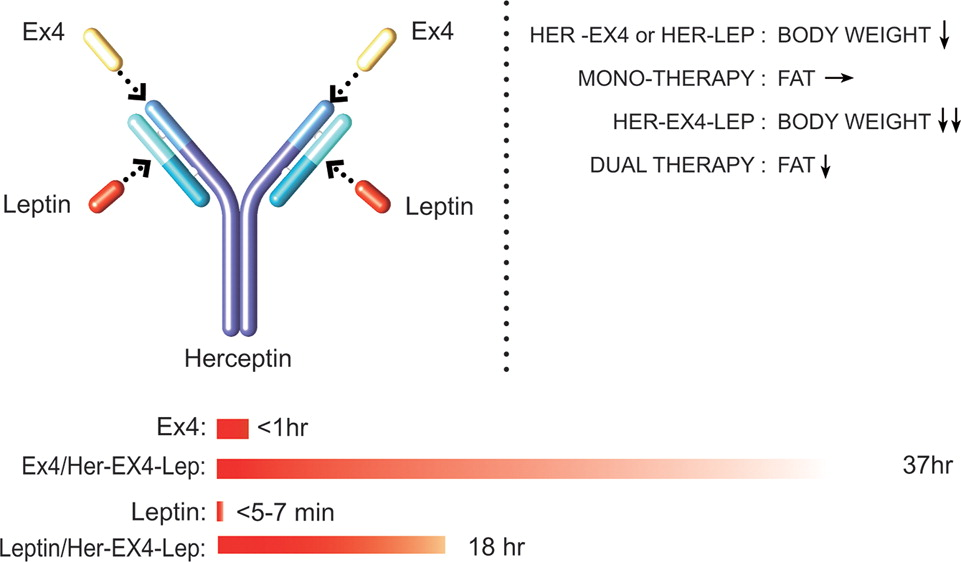
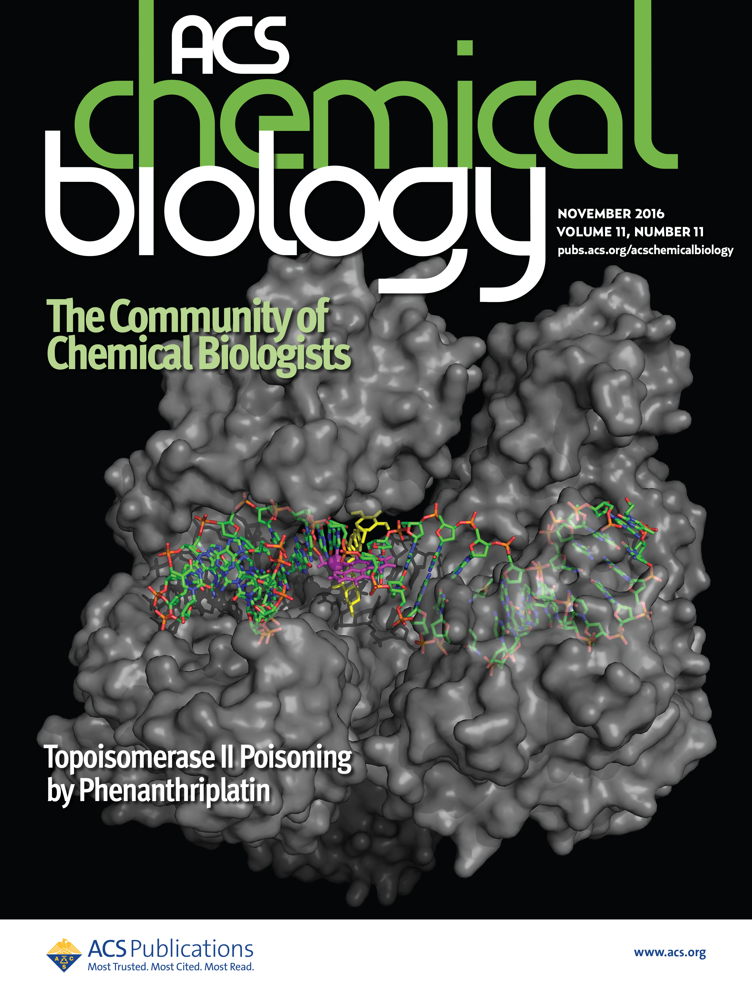

Recent studies have suggested that modulation of two or more signaling pathways can achieve
substantial weight loss and glycemic stability. We have developed an approach to the generation
of bifunctional antibody agonists that activate leptin receptor and GLP-1 receptor. Leptin was
fused into the complementarity determining region 3 loop of the light chain alone, or in
combination with exendin-4 (EX4) fused at the N-terminus of the heavy chain of Herceptin. The
antibody fusions exhibit similar or increased in vitro activities on their cognate receptors,
but 50-100-fold longer circulating half-lives in rodents compared to the corresponding native
peptides/proteins. The efficacy of the leptin/EX4 dual antibody fusion on weight loss,
especially fat mass loss, was enhanced in ob/ob mice and DIO mice compared to the antibody
fusion of either EX4 or leptin alone. This work demonstrates the versatility of this
combinatorial fusion strategy for generating dual antibody agonists with long half-lives.